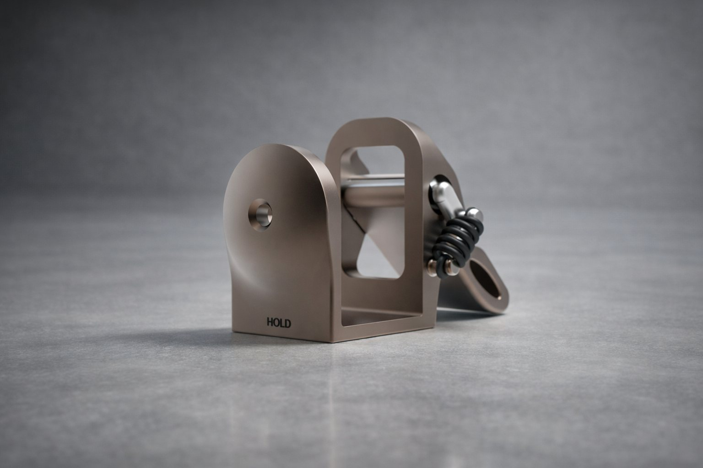
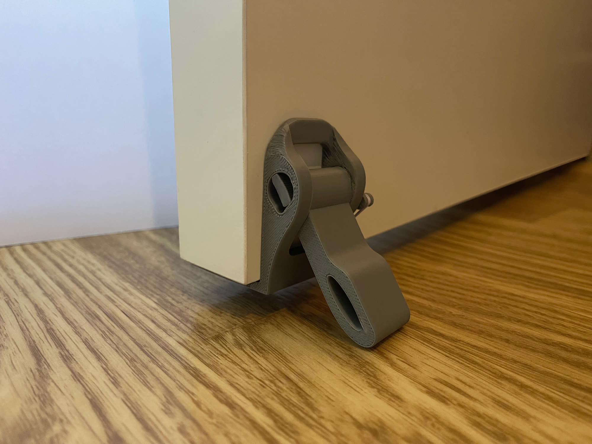
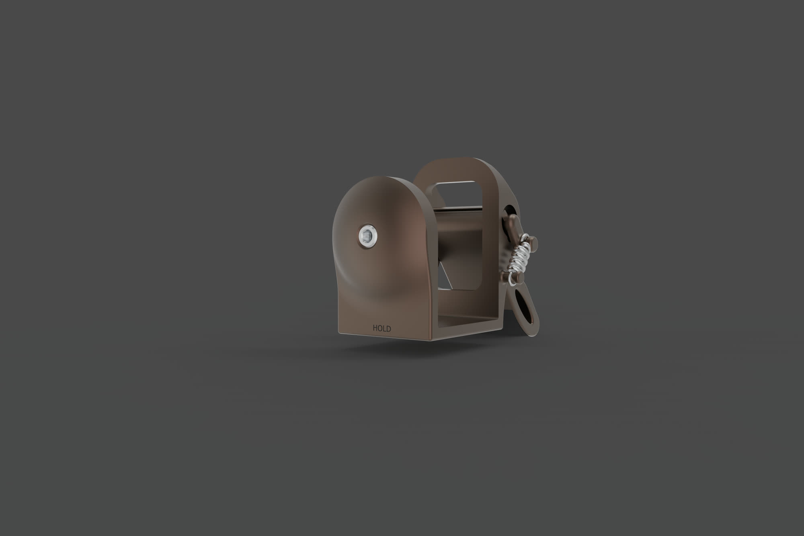
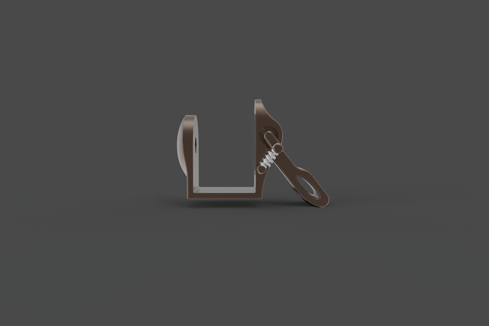
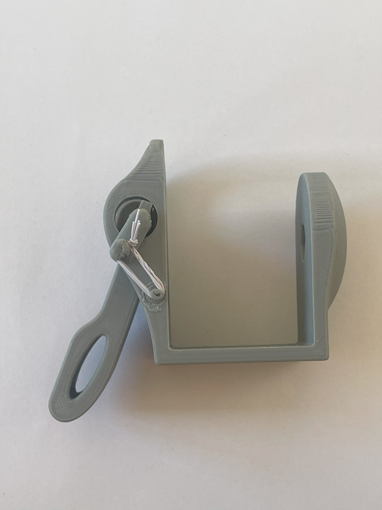
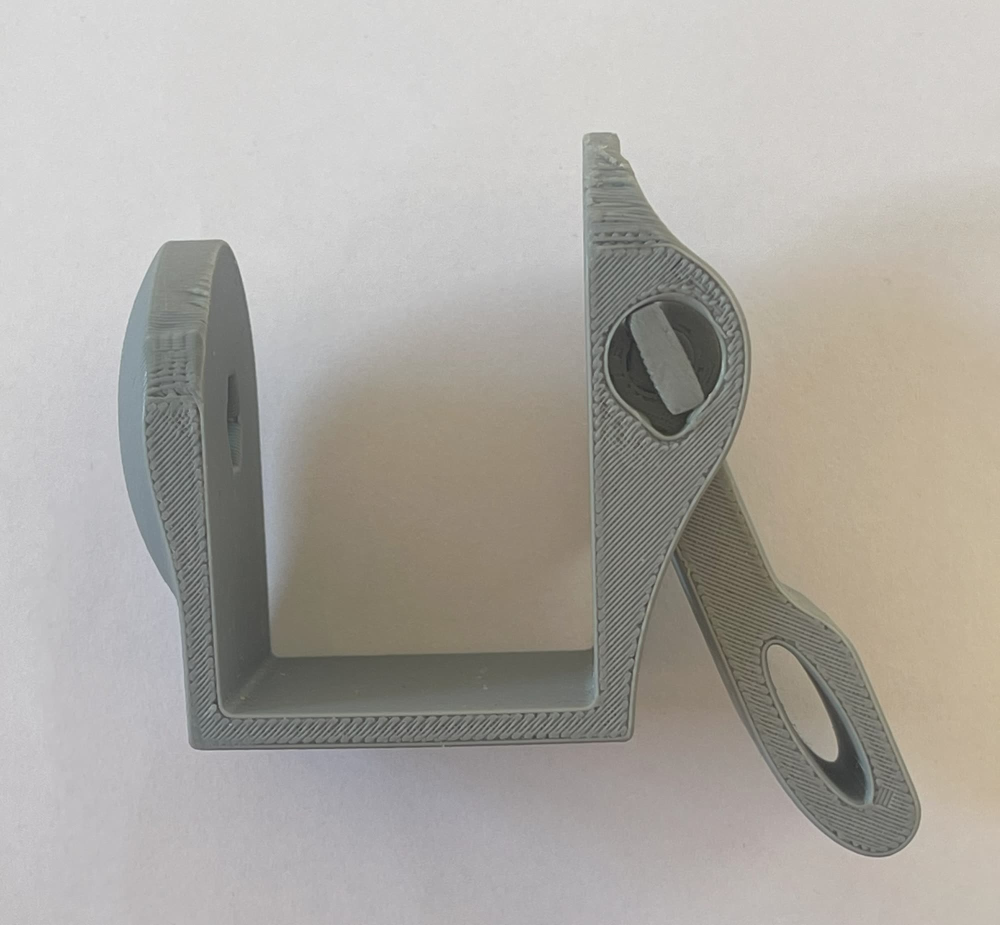
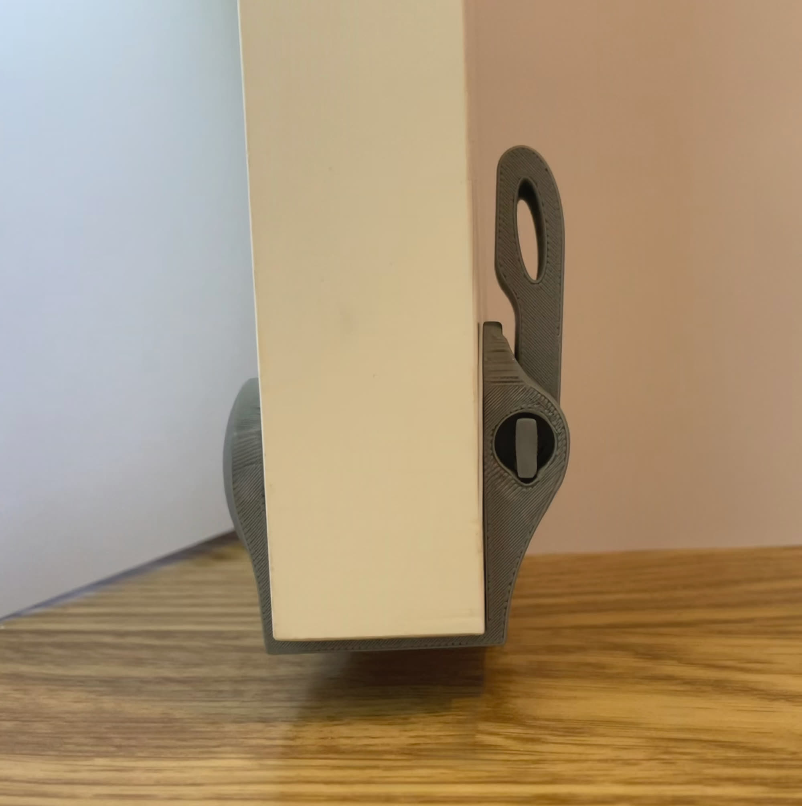

Holds the door. Leaves no mark.
A portable door holder with a spring-loaded snap-lock in a compact housing. It clamps onto the door, holds it open on plain friction, and comes off without leaving a trace.
The whole problem is force without damage. HOLD had to clamp onto a door with no drilling and no permanent mounting, keep a consistent grip through repeated use and dynamic loads like wind, and stay planted on the floor. That meant the spring-loaded arm had to press down hard enough for friction to do the holding, while the snap-lock gave the arm fixed positions without piling on mechanical complexity.

The snap-lock sets the arm in a defined position. The spring-loaded arm transfers force downward into the floor, and friction does the rest. The housing geometry routes the load from the door through the structural body and the clamp interface, so the door itself never carries anything it was not built for.


This is the 3D-printed prototype working on a real door. Snap the arm down and the door stays where you left it. Lift the arm and walk through.
I developed three mechanical concepts and scored them against each other before committing to a force logic. The winner combined the snap-lock with the spring arm. From there the complete assembly was modelled in CAD to check alignment, tolerance stacking and load paths, then refined over iterations to cut mechanical play without losing the compact proportions. The prototype was printed, clamped onto a door, and tested.



HOLD sharpened how I think about force in small mechanisms. Getting the snap-lock and the spring arm to share one load path took precise tolerance control — every deviation showed up as play or misalignment.
Friction-based holding is sensitive by nature. If I took HOLD to production, I would start with fatigue testing of the spring and refining the rotating interfaces, because long-term durability lives exactly there.